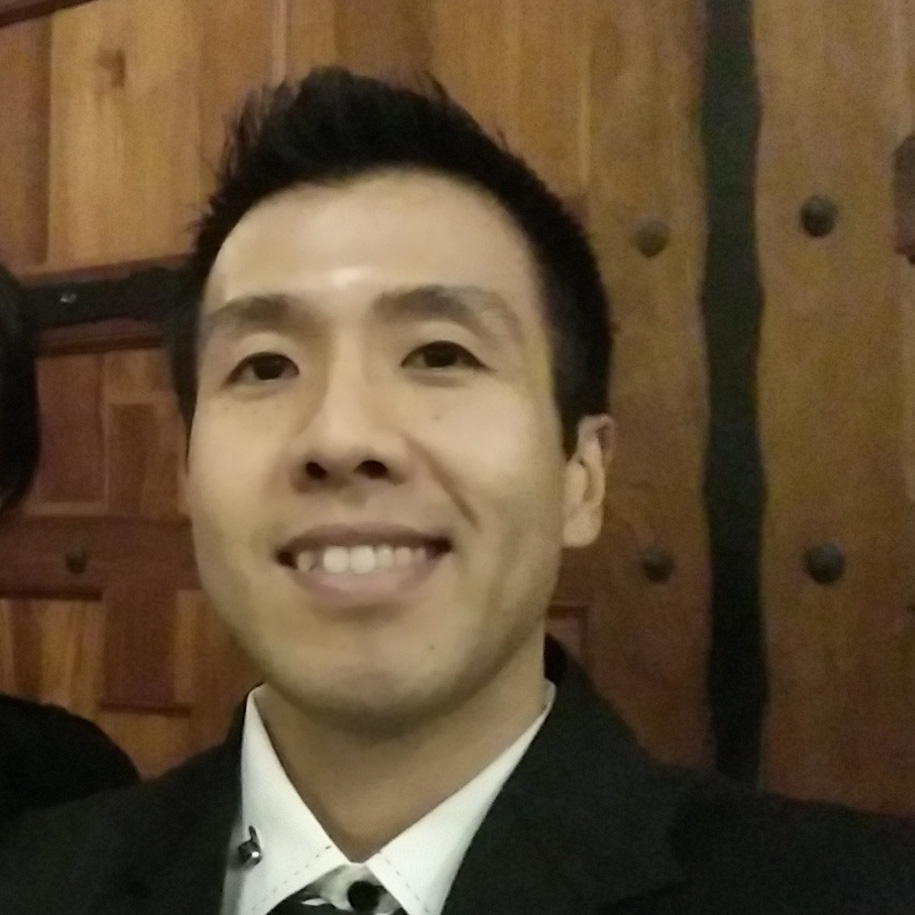

About Me

Photography and cooking. Two of my dearest passions in life. As long as I can remember, I have been involved with food in someway shape or form. I've worked in two restaurants that my mother owned ever since I was a child, getting up early before the sun would rise to go buy groceries and returning home late after the moon would fill the night's sky. In those days I hated just about all aspects of food, mostly due to the fact that it was work and I got paid a whopping $20 for a day. As time passed and the days of restaurant's past flew far behind me, I began to miss those days of cooking. Little did I know that the small yearning would become, for a lack of a better word, an obsession.
Photography story is much simpler. I picked up a camera, started taking pictures. Loved it. End of that story.
On a professional level, I'm currently working at Genentech as a Systems Specialist and a Local Site Administrator. I spend most of my days in front of a computer and embarrasingly enough, a lot of nights in front of a computer as well. I am very passionate and love my job, which is one of the key factors in why I strive to become better and learn as much as I can related to all things technical. If you ever want to start a conversation with me, just talk about food, photography, or tech. Oh and welcome to my page!
Connect with Me